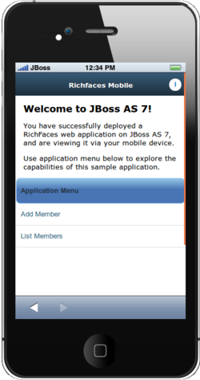
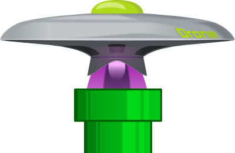
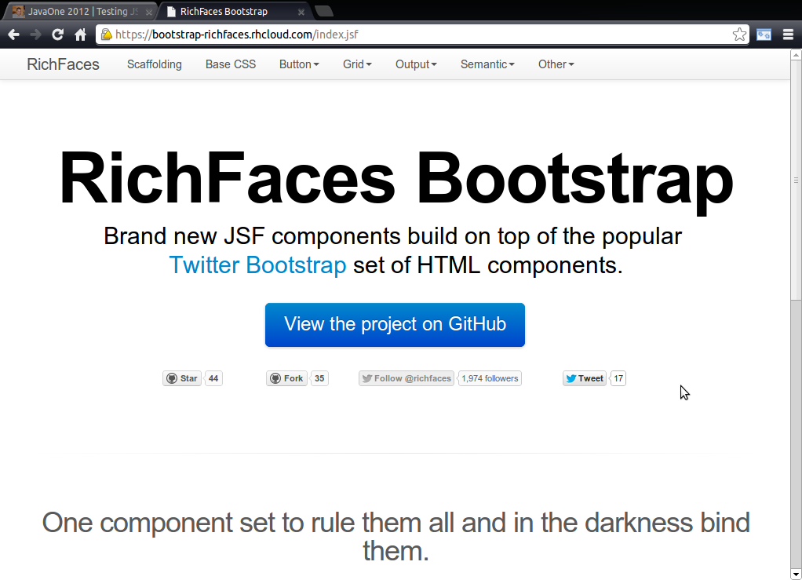
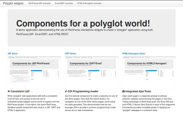
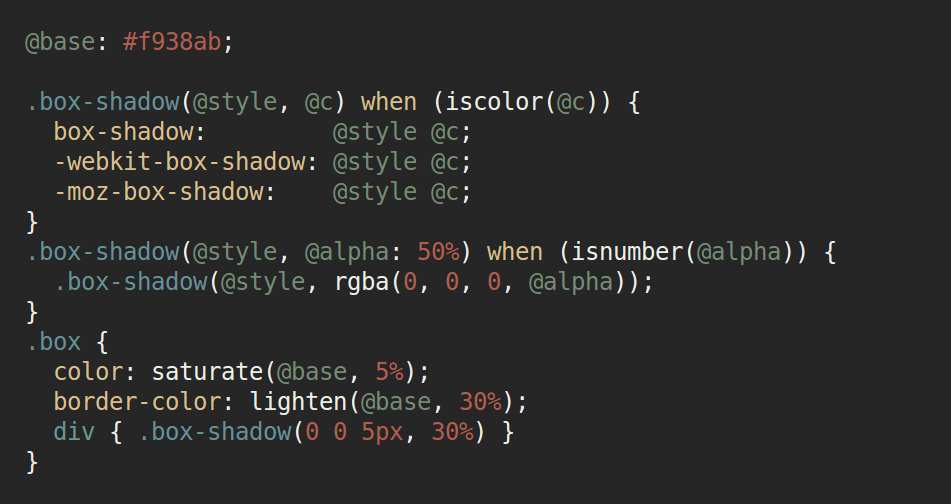
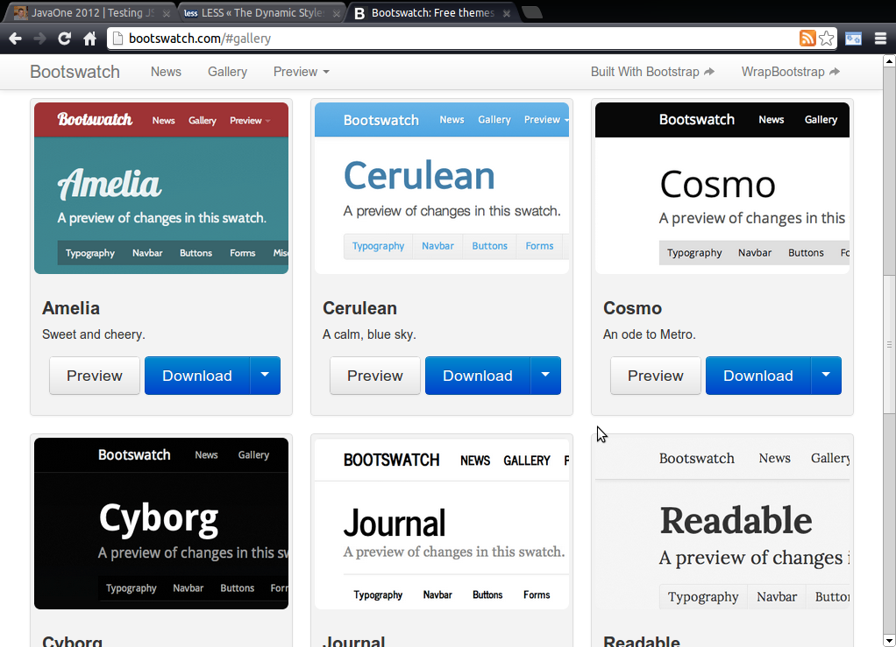

State of the RichFaces
2012, 2013, and Beyond!
- Brian Leathem and Lukas Fryc
- RWP F2F 2013 - Miami
- 2013-02-04
The plan
- What’s RichFaces!?
- What we accomplished in 2012
- Where we are heading in 2013 (hint: RichWidgets!)

What is RichFaces?

RichFaces provides a set of components for building web applications built on top of the visual component model standardized in JSF as part of Java EE.
Points of Difference
Community |
Innovation |
Quality |
Openness |
Community
- Community members are encouraged to get involved
Innovation
- History of innovation
- JSF 2 ajax is ajax from RichFaces 3
- Enterprise Push
- Client-side validation
- Innovation today
- Testing JSF applications
- Component architecture
Quality
- Dedicated QE team
- Functional & Units test suites
- Tens of thousands of tests
- New: Arquillian Extensions
Openness
- Standards
- Source
- Process
2012
Highlights
Highlight | Team Changes
- Brian
- → Project Lead
- Jay & Wesley
- → new projects
- Intern Michal Petrov
- Reduced staff compared to Exadel days
Highlight | 4.1, 4.2, 4.3
- 6 month release cycle
- Showcase on OpenShift
- New components
- editor, pickList, orderingList, notify, contextMenu, hotkey, focus, placeholder
- New Features
- …
- CDK improvements
Highlight | Mobile

- Mobile compatible components
- Single page programming model built using “slidfast”
Highlight | Testing
Arquillian Graphene

Arquillian Warp
Warp | Example
@Test
public void testAjaxOnBlur() {
browser.get(contextPath.toExternalForm());
autocomplete.type("t");
Suggestion<String> firstSuggestion = autocomplete.getFirstSuggestion();
guardXhr(autocomplete).autocompleteWithSuggestion(firstSuggestion);
Warp.initiate(new Activity() {
@Override
public void perform() {
guardXhr(autocomplete).blur();
}
}).inspect(new Inspection() {
@Inject
AutocompleteBean bean;
@AfterPhase(Phase.INVOKE_APPLICATION)
public void verify_bean_executed() {
assertTrue(bean.isListenerInvoked());
}
});
}Highlight | RichFaces Bootstrap

- Sanbox Project
- Great community involvement
- PoC of our new component architecture
Highlight | "Polyglot" widgets

- Our standalone javascript widgets in a poly-framework environment
2013 | The Future
RichFaces 5
RichWidgets
RF5 | New build
RF5 | Integrated LESS
RF5 | Bootstrap themes
RF5 | New component Architecture

- Standalone javascript widgets (RichWidgets)
- Loose coupling to the JSF back-end via a javascript event mechanism
RichWidgets | Widgets for Everyone!
- Pure javascript project